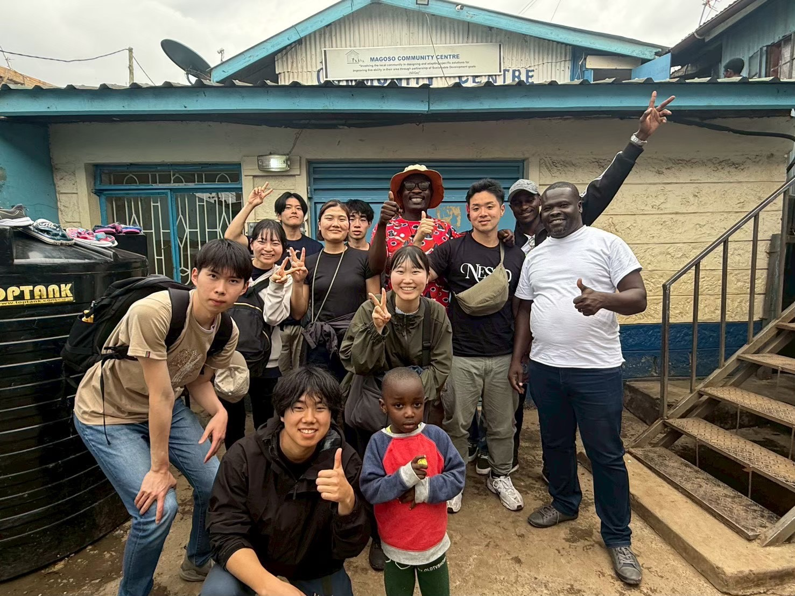

リアルな世界に触れ、
自分をアップデートする。
国際保健の最前線へ。
Experience the real world,
update yourself.
To the forefront of Global Health.
20年以上の歴史を持つ鳥取大学医学部の学生団体「ハクナマタタ」が届ける、心動くフィールドワーク。教科書には載っていない「人と人の繋がり」が、ここにはあります。 Heart-moving fieldwork delivered by "Hakunamatata", a student organization of Tottori University Faculty of Medicine with over 20 years of history. Discover "human connections" you won't find in textbooks.

国境を越え、保健医療の課題に
草の根で向き合う。
Crossing borders, facing health issues at the grassroots level.
国際保健友の会 ハクナマタタは、鳥取大学医学部の学生が中心となって運営・活動する、世界と繋がるためのプラットフォームです。
The International Health Friendship Association "Hakunamatata" is a platform for connecting with the world, mainly operated and led by students from the Faculty of Medicine at Tottori University.
ケニア、エチオピア、タンザニア、フィリピン、ベトナム、カンボジア、ネパール、中国、キューバ、そして日本の地域社会（小町・東北）。私たちは現場に足を運び、現地の声に直接耳を傾けながら、彼らと共に歩み、共に学びます。
Kenya, Ethiopia, Tanzania, Philippines, Vietnam, Cambodia, Nepal, China, Cuba, and local communities in Japan. We visit these sites, listen directly to local voices, walk with them, and learn together.
また、日本最大の医療系学生団体であるIFMSA-Japan（国際医学生連盟 日本）のメンバーとしても活動しており、グローバルなネットワークを通じた留学生の受け入れや、海外の学生との交流も積極的に行っています。
Furthermore, as a member of IFMSA-Japan (International Federation of Medical Students' Associations Japan), we actively host international students and promote cultural exchanges with medical students abroad through its global network.
「支援する・される」という関係を超えた、真の国際協力を目指して。
Aiming for true international cooperation that transcends the relationship of "supporting and being supported".
活動のフィールドOur Fields
世界各地、そして日本の地域社会へ。ハクナマタタの活動は多岐にわたります。
Across the globe and to local communities in Japan. Our activities are diverse.

ケニア・エチオピア・タンザニアKenya / Ethiopia / Tanzania
衛生教育と現地調査Hygiene Education & Research
ハクナマタタ原点の地アフリカ。現地の小学校やコミュニティに入り、子供たちへの衛生教育や健康状態の調査などを実施してきました。
Africa, our origin. We conduct hygiene education for children and health surveys by entering local elementary schools and communities.

フィリピン・ベトナム・カンボジアPhilippines / Vietnam / Cambodia
地域住民への健康調査・相談Health Surveys & Consultations
東南アジアの農村部に滞在し、現地の医療従事者や学生と協働しながら、住民の健康課題の抽出と健康相談を実施します。
Staying in rural Southeast Asia, we identify residents' health issues and provide health consultations in collaboration with local medical professionals and students.

ネパール・中国・キューバNepal / China / Cuba
医療システムと文化の学びLearning Medical Systems
都市と山間部の医療格差、独自のファミリードクター制度など、国ごとの多様な保健医療政策について現地機関と連携し深く学びます。
We deeply learn about diverse health policies of each country, such as medical disparities and unique family doctor systems, in cooperation with local institutions.

日本 (東北・小町)Japan (Tohoku & Komachi)
被災地支援と地域医療Disaster Relief & Community Medicine
東北での心のケアや、地元（小町）での農業を通じた住民との交流、健康教室など、足元からの保健医療にも注力しています。
We also focus on grassroots health care, such as mental care in Tohoku, interacting with residents through agriculture in our hometown (Komachi), and health classes.
ハクナマタタの3つの魅力3 Core Values of Hakunamatata
圧倒的なリアルOverwhelming Reality
観光旅行や座学では決して得られない、現地の保健医療課題に直接触れる経験。教科書を超えた学びが現場にあります。
Experiences of directly touching local health issues that can never be gained through sightseeing trips or classroom lectures. Learning beyond textbooks is on site.
深い人と人の繋がりDeep Human Connections
一時的な訪問者としてではなく、生活を共にし、対話する。言葉の壁を越えた温かい交流と、一生モノの絆が生まれます。
Sharing life and communicating, not as temporary visitors. Warm interactions transcending language barriers and lifelong bonds are born.
自己成長のフィールドField for Self-Growth
未知の環境での試行錯誤、仲間との議論、ゼロからの企画。あらゆる経験が、あなたの可能性とリーダーシップを大きく広げます。
Trial and error in unknown environments, discussions with peers, planning from scratch. Every experience will greatly expand your potential and leadership.
歴史と実績History & Achievements
2001年の設立以来、先輩たちが繋いできた情熱のバトン。
毎年、世界の様々な地域に赴き、現地の保健医療課題に真摯に向き合ってきました。
The baton of passion passed down by seniors since 2001.
Every year, we travel to various regions and sincerely face local health and medical challenges.
海外研修の歩みHistory of Overseas Training
2002年度2002
ケニア研修Kenya Training
ハクナマタタの原点。衛生教育や村落での健康調査を開始し、現地との信頼関係の基礎を築く。
The origin. Started hygiene education and health surveys in villages, building trust with locals.
2004年度2004
ネパール研修Nepal Training
アフリカからアジアへも視野を広げ、新たな医療環境や社会問題についての学びを深める。
Expanded horizons to Asia, learning about new medical environments and social issues.
2005年度2005
ベトナム研修Vietnam Training
東南アジアでの研修を開始。ベトナムの保健医療政策や地域医療の実態を現地で学ぶ。
Started training in Southeast Asia. Learned about Vietnam's health policies and community medicine.
2006年度2006
フィリピン研修Philippines Training
フィリピンの農村部などに滞在し、住民の健康課題の抽出や医療施設の見学などを通して現地の実態を学ぶ。
Stayed in rural Philippines, learning the realities by identifying residents' health issues.
2007年度2007
カンボジア研修Cambodia Training
第5回海外研修。カンボジアの歴史的背景と医療課題に向き合い、現地のNGOや病院を訪問。
Faced Cambodia's historical background and medical issues, visiting local NGOs and hospitals.
2008年度2008
タンザニア研修Tanzania Training
再びアフリカの大地へ。現地の公衆衛生課題や生活環境について深く調査・交流を行う。
Back to Africa. Deeply investigated and interacted regarding local public health issues.
2010年度2010
キューバ研修Cuba Training
独自の医療制度（ファミリードクター制度など）を持つキューバを訪問。予防医療や地域密着型の保健システムについて現地で深く学ぶ。
Visited Cuba with its unique family doctor system. Deeply learned about preventive medicine.
2013年度2013
エチオピア研修Ethiopia Training
約2週間にわたるフィールドワークでエチオピアを訪問。現地の医療システムや保健課題を実体験を通して学ぶ。
2-week fieldwork to learn local medical systems and health challenges through hands-on experience.
2014年度2014
ミャンマー研修（※中止）Myanmar Training (*Cancelled)
ミャンマーでの海外研修を企画・準備していたが、現地の情勢等によりやむなく中止に。
Planned and prepared, but unfortunately cancelled due to local conditions.
2017年度2017
カンボジア研修Cambodia Training
キリングフィールドやプノンペンの施設を訪問し、平和学習と保健医療の関わりを学ぶ。
Visited Killing Fields and facilities in Phnom Penh, learning the link between peace and health.
2019年度2019
中国研修（※中止）China Training (*Cancelled)
北京・上海への研修を企画するも、新型コロナウイルスの世界的流行により直前で無念の中止に。
Cancelled just before departure due to the global COVID-19 pandemic.
2022年度2022
ベトナム研修Vietnam Training
コロナ禍を乗り越え、数年ぶりに海外研修を再開。社会保障制度や感染症対策の現場を視察。
Resumed overseas training. Inspected social security and infection control sites.
2023・2024年度2023-2024
フィリピン研修Philippines Training
農村部（バランガイ）にて地域住民への健康調査を実施。変化する現地のニーズに合わせた支援体制のアップデートを継続中。
Conducted health surveys in rural areas (Barangay). Updating support systems to meet changing needs.
2024年度2024
ネパール研修Nepal Training
ネパールにて都市部と山間部の医療格差などを学ぶ海外研修を実施。歴史ある活動先で新たな知見を得る。
Learned about medical disparities between urban and mountainous areas. Gaining new insights in historic activity sites.
2025年度2025
ケニア研修Kenya Training
ハクナマタタ原点の地であるケニアを再訪。長年培ってきた現地との繋がりを活かし、現在の保健医療課題に向き合う。
Revisiting Kenya, our origin. Utilizing long-cultivated ties to face current health issues.
小町・東北（国内活動）との歩みHistory with Komachi & Tohoku (Domestic)
2002年度〜Since 2002
地域への飛び込みと家庭訪問Diving into the community & Home visits
「地域住民の中に飛び込み、健康について共に学ぶ」ことを目指し、家庭訪問などを通じて関係性を構築。単なる学生の実習地としてではなく、人と人との繋がりを第一に歩み始めました。
Aiming to "learn together about health with residents", we built relationships through home visits. We started by prioritizing human connections, not just as a training ground for students.
2005年頃〜Around 2005
農業体験と学園祭での発信Agricultural experiences & University festivals
畑仕事や田植え、稲刈りなどの農業体験を通じた交流が活発化。学園祭で収穫物を販売し、活動を社会へ発信することで、学生と地域の距離が大きく縮まりました。
Interacted actively through farming experiences like rice planting. Selling harvests at festivals to share our activities with society greatly narrowed the distance between students and the community.
2010年代〜現在2010s to Present
交流から見つける健康とホスピタリティFinding health & hospitality through interaction
血圧測定や健康教室、伝統の「わら馬づくり」や夏と冬の交流会などを継続実施。地域の方々から温かさや生活の知恵を教わりながら、医療者としてのホスピタリティを育む大切な場となっています。
Continuing health classes, traditional events, and Summer/Winter exchange events. A precious place to nurture hospitality as medical professionals while learning warmth and life wisdom from the locals.
2012〜2014年度2012-2014
東北研修Tohoku Training
東日本大震災を受け、被災地での健康支援と心のケア活動を展開。現地の方々との対話を通じ、寄り添う医療のあり方を学ぶ。
Provided health support and mental care in disaster areas after the Great East Japan Earthquake. Learned about compassionate medical care through dialogue with locals.
2021年度2021
東北研修Tohoku Training
震災から10年という節目に東北研修を実施。コロナ禍の制限下でも工夫を凝らし、復興の現状や防災・減災について見識を深める。
Conducted Tohoku training marking the 10th anniversary of the earthquake. Deepened knowledge on current reconstruction and disaster prevention.
海外研修と地域活動が繋がる意味The Meaning of Connecting Overseas and Local
「チームハクナマタタ」の最大の強みは、海外での学びと、地元での実践が深く連動していることです。
The greatest strength of "Team Hakunamatata" is that overseas learning and local practices are deeply linked.
国内の地域社会で住民の生活や人生に寄り添い、直接対話する経験があるからこそ、海外の異文化の中でも人々の暮らしに共感し、表面的な問題だけでなくその根底にある真の課題に気づくことができます。
Because we have experience in engaging with residents' lives and having direct dialogues in domestic communities, we can empathize with people's lives even in foreign cultures overseas, noticing not only superficial problems but the true underlying issues.
「海外研修で何を学ぶかは国内活動で学んだことにつながり、海外で得た広い視野や新しい視点は、帰国後に再び国内の活動へと還元すべきである。」
"What we learn in overseas training leads to what we learned in domestic activities, and the broad perspectives gained overseas should be returned to domestic activities."
私たちは、遠い世界と足元の地域を行き来することで、真の「国際保健」と「地域医療」のあり方を学び続けています。
We continue to learn the true state of "Global Health" and "Community Medicine" by going back and forth between the distant world and our local communities.
一緒に、世界を少しだけ
良くしませんか？Why not make the world
a little better with us?
ハクナマタタでは、新しい仲間を募集しています。
特別なスキルは必要ありません。必要なのは「知りたい」「関わりたい」という情熱だけです。
Hakunamatata is looking for new members.
No special skills are required. All you need is the passion to "know" and "get involved".
お問い合わせ・参加希望はこちらまでContact us / Join us here
hakumata.kaigai@gmail.com